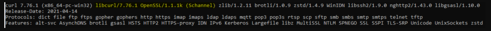

Onboarding Checklist
This repository contains the a checklist for onboarding the Trust Network Participants. This includes CSCAs, Auth information, signing information and other relevant files for onboarding a participant. Videos guides to the steps described here are available on this page.
Onboarding Process

Prerequisites for Onboarding
Before beginning the onboarding process, please ensure the following tools, permissions, and environment configurations are in place. This checklist is crucial for a seamless setup experience.
| Tools/Requirement | Description |
|---|---|
| GitHub Account | - Ensure you have an active GitHub account with access to the relevant repositories. - Permissions: Confirm the necessary repository permissions (read/write access if required for pushing commits). |
| OpenSSL | - Required for generating and managing digital certificates. - Minimum Version: 1.1.1 or higher. - Verify: openssl version.- Path Configuration: Ensure OpenSSL is correctly added to the system path. - Download OpenSSL |
| cURL | - Necessary for command-line data transfers, especially useful for API requests. - Minimum Version: 7.68.0 or higher. - Verify: curl --version.- Download cURL |
| Git | - Essential for version control and interacting with GitHub repositories. - Minimum Version: 2.28.0 or higher (recommended for improved configuration capabilities). - Verify: git --version.- Download Git |
| GPG - Gnu Privacy Guard | - Essential for singing you git tags in your private repository. - Minimum Version: 2.2 - 2.4 any fewer version is outdated. - Verify: gpg --version.- Download GPG |
| Text Editor or IDE (Optional) | - Use a reliable text editor or IDE such as Visual Studio Code, Sublime Text, or Notepad++ for editing files. - Extensions: If using VS Code, consider adding extensions for Markdown and GitHub integration. - Download Visual Studio Code |
| Network and Firewall Permissions | - Network Access: Ensure network settings allow access to GitHub and other required external resources (e.g., API endpoints). - Firewall Permissions: Verify firewall permissions to avoid connectivity issues. |
| CLI Tools and Path Configuration | - Confirm that all tools (e.g., openssl, curl, git) are available in the system PATH for easy command-line access.- OS Compatibility: These instructions are applicable for Linux, macOS, and Windows. |
| Environment Configuration | - Environment Variables: Set required environment variables (e.g., API keys, tokens, or paths) as specified. |
| Additional Resources and Documentation | - Familiarize yourself with supplementary documentation, including API references, security guidelines, and data handling policies needed for the onboarding process. |
Save For Later: Be sure to securely save items like GPG Keys, Secrets, GitHub usernames, GitHub Repository URL, GitHub PAT (Personal Access Token), and other configurations as they will be needed in upcoming steps.
Steps to Be Followed by Participant Country:
Git Repository
Create a private git repository on github. One for each Environment (DEV, UAT, PROD)
Please check Create private repository video for reference
- From Github profile, go to repositories
- Click on New
- Enter Repository name, follow the convention, it has to contain the ISO 3 letter. All the rest is optional
- Click on Create Repository
Save For Later: Be sure to securely save items like GitHub usernames, and Repository Name, URL as they will be needed in upcoming steps.
Create PAT (Personal Access Token) for Github account if not created already
- Go to Github profile -> Settings
- Go to Developers Settings -> Personal Access Tokens -> Tokens (Classic)
- Click on Generate New Token button (Generate New Token classic)
- Use Authentication code
- Add Note, Expiration, ‘Repo’ as a scope and click ‘Generate Token’
Save For Later: Be sure to securely save the GitHub PAT (Personal Access Token), as it will be needed in upcoming steps.
Local Repository
- Go to local repo
Clone the new Github repo in your local repo
- git clone https://(your account PAT)@github.com/(your account or organization)/(repo).git - cd (repo) - git remote add template-repo https://github.com/WorldHealthOrganization/tng-participant-template.git - git pull template-repo main
Invite tng-bot
- Add tng-bot to new repository
Please check Invite tng-bot to private repository video for reference
- Go to Repository -> Settings
- Go to Collaborators
- Authenticate
- Click on Add people
- Add tng-bot for Prod and tng-bot-dev for dev and UAT
- Assign Role: When inviting both tng-bot and tng-bot-dev, select the role as “Write” Click Add Selection to complete the invitation.
Generate GPG Key
- Create GPG Keys for responsible persons for each environment
Note: Before generating a new GPG key, make sure you’ve verified your email address. If you haven’t verified your email address, you won’t be able to sign commits and tags with GPG. Please check GPG key Creation video for reference
- Download and install the GPG command line tools for your operating system. We generally recommend installing the latest version for your operating system.
- Open Git Bash
- Generate a GPG key pair. Since there are multiple versions of GPG, you may need to consult the relevant man page to find the appropriate key generation command.
If you are on version 2.1.17 or greater, paste the text below to generate a GPG key pair.
Shell gpg --full-generate-keyIf you are not on version 2.1.17 or greater, the gpg –full-generate-key command doesn’t work. Paste the text below and skip to step 4.
Shell gpg --default-new-key-algo rsa4096 --gen-key- At the prompt, specify the kind of key you want, or press Enter to accept the default. (Default is RSA)
- At the prompt, specify the key size you want, or press Enter to accept the default. (For RSA go for 4096)
- Enter the length of time the key should be valid. Press Enter to specify the default selection, indicating that the key doesn’t expire. Unless you require an expiration date, we recommend accepting this default.
- Verify that your selections are correct.
- Enter your user ID information.
Note: When asked to enter your email address, ensure that you enter the verified email address for your GitHub account. To keep your email address private, use your GitHub-provided no-reply email address. For more information, see “Verifying your email address” and “Setting your commit email address.”
- Authenticate
- Use the gpg –list-secret-keys –keyid-format=long command to list the long form of the GPG keys for which you have both a public and private key. A private key is required for signing commits or tags.
Shell gpg --list-secret-keys --keyid-format=longSome GPG installations on Linux may require you to use gpg2 –list-keys –keyid-format LONG to view a list of your existing keys instead. In this case you will also need to configure Git to use gpg2 by running git config –global gpg.program gpg2.
From the list of GPG keys, copy the long form of the GPG key ID you’d like to use. In this example, the GPG key ID is 3AA5C34371567BD2:
Shell $ gpg --list-secret-keys --keyid-format=long /Users/hubot/.gnupg/secring.gpg ------------------------------------ sec 4096R/3AA5C34371567BD2 2016-03-10 [expires: 2017-03-10] uid Hubot <hubot@example.com> ssb 4096R/4BB6D45482678BE3 2016-03-10Paste the text below, substituting in the GPG key ID you’d like to use. In this example, the GPG key ID is 3AA5C34371567BD2:
Shell gpg --armor --export << replace with your actual GPG key ID >> # Prints the GPG key ID, in ASCII armor formatSave For Later: Be sure to securely save the GPG Key, as it will be needed in upcoming steps.
- Copy your GPG key, beginning with —–BEGIN PGP PUBLIC KEY BLOCK—– and ending with —–END PGP PUBLIC KEY BLOCK—–.
- Add the GPG key to your GitHub account.
Please check Adding GPG key to repository video for reference
- Go to Github profile -> Settings
- Go to SSH and GPG Keys
- Click on New GPG Key
- Add Title. Add key copied in last step
- Click on Add GPG Key
Create Certificates
Certificate Preparation for DEV and UAT
Disclaimer: This script is designed to create self-signed certificates solely for non-production environments, such as DEV and UAT, not intended to be used on production environments. To use it, choose the appropriate script for your operating system:
Unix/Linux: Use the gen_all_certs.sh bash script on Linux/Unix/Mac operating system.
Windows: Use the gen_all_certs.ps1 PowerShell script on Windows operating system.
These scripts, along with the provided configuration files, serve as guidelines for certificate preparation .
If your Operating Systems is Unix/Linux/Mac
- To customize certificate parameters, update the DN_template.cnf file, which will be used by the gen_all_certs.sh script.
- Modify the following default certificate parameters as needed.
export OSSL_COUNTRY_NAME="XC"
export OSSL_STATE_NAME="Test State"
export OSSL_LOCALITY_NAME="TEST"
export OSSL_ORGANIZATION_NAME="WHO"
export OSSL_ORGANIZATIONAL_UNIT_NAME="R&D"
export OSSL_COMMON_NAME="NationXC_TNP
Note: OSSL_COUNTRY_NAME should be ISO 2 letter name of the country mapped to the name used in repository.
If your Operating Systems is Windows
For Windows, use the gen_all_certs.ps1 PowerShell script. You can modify the environment variables directly within the script or set them in your current PowerShell session:
1.Open PowerShell on your Windows machine.
2.Set the required environment variables.
$env:OSSL_COUNTRY_NAME="XC"
$env:OSSL_STATE_NAME="Test State"
$env:OSSL_LOCALITY_NAME="TEST"
$env:OSSL_ORGANIZATION_NAME="WHO"
$env:OSSL_ORGANIZATIONAL_UNIT_NAME="RND"
$env:OSSL_COMMON_NAME="NationXC_TNP"
Note: OSSL_COUNTRY_NAME should be ISO 2 letter name of the country mapped to the name used in repository.
Please note that you need to have OpenSSL installed (e.g. Win64 OpenSSL v3.3.0 Light) and added to your PATH environment variable. Also you may need allow the execution by setting an execution policy.
Set-ExecutionPolicy -ExecutionPolicy Unrestricted -Scope Process
How to Run Script :
- Once you execute the script. It will generate all certificates and keys in a subfolder named by current datetime.
- Notes: While execution of “gen_all_certs.sh” script on Unix/Linux/Mac Operating System, Please provide script argument “DN_template.cnf” file which consists of country related information to generate all required certificates (TLS,SCA,UP)
**For Mac/Linux/Unix**
cd scripts/certgen
./gen_all_certs.sh DN_template.cnf ## Provide DN_template.cnf file as a script argument.
zsh ./gen_all_certs.sh DN_template.cnf ## Use this if you are using Zsh on your Ubuntu system.
**For Windows:**
cd scripts/certgen
./gen_all_certs.ps1
This setup generates all required certificates (TLS, SCA, UP) and keys in a timestamped subfolder, based on the configuration specified in DN_template.cnf for Unix/Linux and the environment variables set in the current PowerShell session for Windows.
Prepare Folders
Note: keep your private keys safe and secure. Do not share them with anyone.
Copy the generated certificates to the respective folders and change the file names to match the naming convention. For the case of self-signed TLS certificates, the CA.pem is just a copy of the TLS.pem (check to have keyCertSign in the keyUsage). The CA.pem should exist, since it is used to verify the TLS client certificate when connecting to the TNG application. Files to be copied in respective folders are as follows:
- SCA.pem -> onboarding/DCC/SCA
- UP.pem -> onboarding/DCC/UP
- CA.pem -> onboarding/DCC/TLS
- TLS.pem -> onboarding/DCC/TLS
Note: On DEV and UAT environment, if the files are generated using a script, delete the generated folder before committing the files.
Certification Preparation for Prod
This guide follows the certificate templates defined in the certificate governance. Public Key Certificates generated by following this guide will include the minimal required fields - further fields can be added in the configuration files if needed.Self-signed certificates are typically used in DEV and UAT environments.
For production, It is strongly recommended to use certificates signed by a trusted Certificate Authority (CA). This is just an example reference on how to use a Trusted CA certificate in a production environment. You should refer to the specific procedures provided by the public Trusted Certificate Authority (CA) of your choice for accurate and detailed instructions Reference- Recommendation to use Trusted Public CA Certificate in Prod
Only following signature algoriths are supported for the certificate.
- ECDSA with SHA-256
- ECDSA with SHA-384
- RSASSA-PSS
- DSA with SHA-256
- Legacy: SHA-256 with RSA Encryption
SCA certificate (TNPSCA) generation example
Please check SCA Creation video for reference
sca.conf: Create a new file called sca.conf and replace the dn entries with your jurisdiction’s details.
[req] prompt = no default_md = sha256 distinguished_name = dn [dn] C = DE ST = NRW L = Bonn O = MinistryOfTest OU = DGCOperations CN = SCA_DGC_DE_01 [ext] basicConstraints = critical, CA:TRUE, pathlen:0 keyUsage = critical, cRLSign, keyCertSign subjectKeyIdentifier = hashCertificate generation: Open a command line prompt in the folder where the sca.conf is located and use the following OpenSSL command to create the private key (CAprivkey.key) and the certificate (CAcert.pem):
For Prod it’s recommended to use Trusted CA issued Certificate only. As below command for self-signed certificate generation as it’s usually only recommended for DEV/UAT environment.
openssl req -x509 -new -days 1461 -newkey ec:<(openssl ecparam -name prime256v1) -extensions ext -keyout CAprivkey.key -nodes -out CAcert.pem -config sca.conf
DSC generation example
DSC generation example Document Signer Certificates (DSCs) must be signed by the SCA. Hence, you have to create the SCA certificate (with the corresponding private key) before you can issue DSCs.
DSC.conf: Please check DSC generation and deletion video for reference
Create a new file called DSC.conf in the folder where your CA’s private key is located and add the following fields:
[ext] keyUsage = critical, digitalSignature subjectKeyIdentifier = hash authorityKeyIdentifier = keyid:always crlDistributionPoints = URI:http://crl.exampledomain.example/CRL/SCA.crl extendedKeyUsage = 1.3.6.1.4.1.1847.2021.1.1,1.3.6.1.4.1.1847.2021.1.2,1.3.6.1.4.1.1847.2021.1.3It is recommended that a SCA provides certificate revocation lists. Therefore, replace the crlDistributionPoints URI with the information for your jurisdiction.
The extendedKeyUsage field is optional, for Covid certificates the below values are recommend to be used to further restrict the DSC certificate as follows:
Field Value
extendedKeyUsage 1.3.6.1.4.1.1847.2021.1.1 for Test Issuers
extendedKeyUsage 1.3.6.1.4.1.1847.2021.1.2 for Vaccination Issuers
extendedKeyUsage 1.3.6.1.4.1.1847.2021.1.3 for Recovery Issuers\The above example contains all three extended key usages.
Create a certificate signing request (CSR):In order to create a certificate for a Document Signer, first create a Certificate Signing Request preferably on the machine that will use the certificate in order to avoid copying the private key (DSC01privkey.key) to this machine later. The CSR must contain the Distinguished Name (DN) information that will be included in the DSC. Open a command prompt and use the following command to create the CSR:
openssl req -newkey ec:<(openssl ecparam -name prime256v1) -keyout DSC01privkey.key -nodes -out DSC01csr.pemIf needed, you can repeat this procedure to create multiple CSRs for different DSCs (on different machines). When prompted, enter the necessary information (e.g. C= your jurisdiction (MUST), O = your Organization (OPTIONAL), CN = non-empty and unique CN (MUST), …).
Issue the certificate: Copy the CSR (DSC01csr.pem) to the folder where the private key of your CA is located. Open a command prompt and use the following command to issue the DSC (DSCcert.pem):
openssl x509 -req -in DSC01csr.pem -CA CAcert.pem -CAkey CAprivkey.key -CAcreateserial -days 730 -extensions ext -extfile DSC.conf -out DSCcert.pemImportant Recommendations for Prod: Please replace CAcert.pem and CAprivkey.key with signing material from an officially Trusted Certification Authority instead using your own self-signed one.
TNPUP generation example
- uploadCert.conf
Please check UP Creation video for reference
Create a new file called uploadCert.conf and replace the dn entries with your jurisdiction’s details.
[req] prompt = no default_md = sha256 distinguished_name = dn [dn] C = DE ST = NRW L = Bonn O = MinistryOfTest OU = DGCOperations CN = NationX_TNPUP [ext] keyUsage = critical, digitalSignatureCertificate generation: Open a command line prompt in the folder where the uploadCert.conf is located and use the following OpenSSL command to create the private key (TNP_UP.key) and the certificate (TNP_UP.pem):
plaintext openssl req -x509 -new -days 365 -newkey ec:<(openssl ecparam -name prime256v1) -extensions ext -keyout TNP_UP.key -nodes -out TNP_UP.pem -config uploadCert.conf
TNPTLS generation example
- TLSClient.conf
Please check TLS Creation video for reference
Create a new file called TLSClient.conf and replace the dn entries with your jurisdiction’s details.
[req] prompt = no default_md = sha256 distinguished_name = dn [dn] C = DE ST = NRW L = Bonn O = MinistryOfTest OU = DGCOperations CN = NationX_TNP_TLS [ext] keyUsage = critical, digitalSignature extendedKeyUsage = clientAuth
Note :Beware that self-signed certificates should also contain the key usage Certificate signing (keyCertSign), so that the (self) signature of the certificate can be verified.
```
plaintext
[ext]
keyUsage = critical, digitalSignature, keyCertSign
extendedKeyUsage = clientAuth
```
Certificate generation: Open a command line prompt in the folder where the TLSClient.conf is located and use the following OpenSSL command to create the private key (TNP_TLS.key) and the certificate (TNP_TLS.pem):
plaintext openssl req -x509 -new -days 365 -newkey ec:<(openssl ecparam -name prime256v1) -extensions ext -keyout TNP_TLS.key -nodes -out TNP_TLS.pem -config TLSClient.conf
RSA Public Key Certificates In case you want to use RSA certificates you can still use the configuration files provided above. During the CSR/certificate creation, replace the -newkey ec:<(openssl ecparam -name prime256v1) with -newkey rsa:4096 for a 4096 Bit RSA key.
Please be aware that RSA is NOT RECOMMENDED for the DSC and if you want to use RSA as your document signing algorithm, please create either a 2048 bit RSA key or at maximum a 3072 bit RSA key due to the space limitations on the QR codes.
Provide
Please check Signing (tag) certificates video for reference
Git Commands for Configuring, Committing, and Pushing Signed Commits are also available here
Finally commit push changes and make a signed tag for the version you want to take into use, by following the steps below:
List all the GPG keys available on your system
gpg --list-keyOutPut gpg --list-key /home/test/.gnupg/pubring.kbx ----------------------------- pub rsa4096 2024-09-19 [SC] CD822874C7862BA4BB6B950E40CC62009D9A00B0 uid [ultimate] Test User1 (This GPG Key is for XXC test Country) <youruser@yourdomain.com> sub rsa4096 2024-09-19 [E]Note: The PUB ID in above output is CD822874C7862BA4BB6B950E40CC62009D9A00B0 , In your case you need to replace with « replace with your Pub ID » with your actual GPG public key ID to configure Git to use a GPG key for signing commits or tags in next command.
Configure the signing key to be used globally for Git commits and tag
git config --global user.signingkey << replace with your Pub ID >>- Retrieve the current GPG signing key configured for Git
git config --get user.signingkey - Configures the global Git username and email
git config --global user.name "Your Git UserName" git config --global user.email "Your email Id" - Stage all changes for the next commit
git add . - Create a signed Git commit with a commit message,
git commit -sm "added all certificates files" - Push changes to the main branch.
git push origin main - Create a signed Git tag with a message
git tag -s v1.2 -m 'my signed 1.2 tag' Displays the details of a specific tag
git show v1.2- Pushes all the local tags to the remote repository
git push --tags - For more detailed git commands please review Appendix
Everyone Must Sign - Always a good idea Signing tags and commits is great, but if you decide to use this in your normal workflow, you’ll have to make sure that everyone on your team understands how to do so. This can be achieved by asking everyone working with the repository to run git config –local commit.gpgsign true to automatically have all of their commits in the repository signed by default. If you don’t, you’ll end up spending a lot of time helping people figure out how to rewrite their commits with signed versions. Make sure you understand GPG and the benefits of signing things before adopting this as part of your standard workflow.
Send an onboarding/participation request
- Send an onboarding/participation request to gdhcn-support@who.int which contains:
- URL of the private repository created as a prerequisite
- The GPG key ( Beginning with —–BEGIN PGP PUBLIC KEY BLOCK—– and ending with —–END PGP PUBLIC KEY BLOCK—–) exported in Step 1.8.6.4
Validate the connection
- Once the confirmation of successful onboarding is received from the TNG Support Team ( gdhcn-support@who.int), please do the following.
THe following are the endpoints for the Trust Network Gateway for each of development (DEV), user-acceptence testing (UAT) and production (PROD) *environments:
| Environment | EndpointURL |
|---|---|
| PROD | https://tng.who.int |
| UAT | https://tng-uat.who.int |
| DEV | https://tng-dev.who.int |
Please ensure you replace with your actual environment’s endpoint URL wherever indicated.
Windows Users – cURL Certificate Validation Note:
Windows ships with cURL that uses Schannel, which does not support PKI/KEY certificates. To avoid validation errors, use a cURL build with OpenSSL. Users should check their current version with curl –version and download an OpenSSL-based build if necessary. DownloadLink After extracting, go to the bin folder and verify with ./curl.exe –version (it should show LibreSSL or OpenSSL).
Windows Platform Users Only: Run all below validation commands using ./curl.exe … to ensure the correct SSL backend is used.
- After onboarding in the DEV/UAT/PROD Environment, check the connectivity with the Trust Network Gateway using its API. This can be achieved with following command:
curl -v <<EndpointURL>>/trustList --cert TLS.pem --key TLS.key
You should see a output like:
[
{
"kid": "+jrpHSqdqZY=",
"timestamp": "2023-05-25T07:55:21Z",
"country": "XC",
"certificateType": "UPLOAD",
"thumbprint": "fa3ae91d...",
"signature": "MIAGCSqGSIb3D...",
"rawData": "MIIErTCCA5WgAwIBAgII..."
}
]
- Test the other Trustlist Routes in the same style (e.g. with DSC/SCA/Upload/Authentication…)
Upload DSC Certificate
Create an Document Signer Certificate and sign it by the SCA Refer and DSC generation example
Create an CMS Package :
Note: It could be achieved using either of the two methods listed below — Method 1 (Command Line) OR Method 2 (Script-based approach).
Method 1 - Command line . Before running the below commands we need DSC certificate : To Generate DSC through command line - Follow section 4.1.1.5.6.2
openssl x509 -outform der -in DSC.pem -out cert.der
openssl cms -sign -nodetach -in cert.der -signer UP.pem -inkey UP.key -out signed.der -outform DER -binary
openssl base64 -in signed.der -out DSC_cms.b64 -e -A
Check DSC is already exist before upload CMS package
Note: Please replace XC with your actual two letter country code
curl -v <<EndpointURL>>/trustList/DSC/XC --cert TLS.pem --key TLS.key
Upload the CMS Package to the Gateway
Below command require 3 inputs (TLS.pem, TLS.key and DSC_cms.b64)
curl -v -X POST -H "Content-Type: application/json" --cert TLS.pem --key TLS.key -H "Accept: application/json" --data '{"cms": "'"$(cat DSC_cms.b64)"'", "properties": {}, "domain": "DCC|IPS-PILGRIMAGE", "group": "DSC|DESC"}' <<EndpointURL>>/trustedCertificate
Note: Replace domain, group, and EndpointURL with the appropriate values for your onboarding environment.
DCC for domain, DSC for group, and https://tng-dev.who.int for DEV environment endpoint.
Example

- Download the Trustlist again, and check if your DSC is available.
curl -v <<EndpointURL>>/trustList/DSC/XC --cert TLS.pem --key TLS.key
Method 2 - Scripts
The DSC generation and upload of CMS package to TNG Gateway could be achieved through the below mentioned scripts. For DEV and UAT environments you may use script.
The Distinguished Name ( DN) configuration file while will parse as source DN_template.cnf is an example.
Please replace with your actual OSSL_COUNTRY_NAME, OSSL_STATE_NAME etc parameters accordingly of DN_template.cnf file.
The script expects at least two arguments: A configuration file (DN_template.cnf) that contains the Distinguished Name (DN) template. A subdirectory where the SCA (Signing Certificate Authority) PEM and KEY files are located. An optional third argument can be provided to specify the purpose of the DSC (e.g., test, vax, rec). If this argument is not provided, the DSC will be generated for all purposes.
How to to run DSC Generate Script gen_dsc.sh
./gen_dsc.sh DN_template.cnf path/to/sca_directory [test/vax/rec-purpose]
./gen_dsc.sh: Script name
/path/to/sca: Create SCA directory which contains SCA.pem and SCA.key
How to run upload_dsc.sh script to upload CMS Package: upload_dsc.sh
./upload_dsc.sh /path/to/subdir /path/to/DSC_dir [DCC]
./upload_dsc.sh: Script name
/path/to/subdir: Create subdir directory which contains UP.pem and UP.key.
/path/to/DSC_dir: Create DSC_dir directory which contain the DSC.pem.
DCC: The domain name to be used. If omitted, the script will default to DCC.
Important : Once above command executed sucessfully that’s mean your CMS package uploaded to gateway
Check DSC Status
Please replace XC with your actual two letter country code
curl -v <<EndpointURL>>/trustList/DSC/XC --cert TLS.pem --key TLS.key
Note: Some versions of curl don’t attach the client certificates automatically. This can be checked via curl –version Ensure that the used version is linked to OpenSSL. Especially under Windows (https://curl.se/windows/):
Curl version on Unix/Mac: We strongly recommend updating curl and nss to newer latest versions for full compatibility with modern cryptographic standards.The outdated version of curl or nss and may not support modern SSL/TLS protocols or elliptic curve cryptography (ECC) cipher suites properly.
Working Setup

Non-working setup

Certificate Validation on Grafana: Once the CMS package is uploaded to the gateway, your DSC certificate entry will be reflected in Grafana.
Appendix
Further example configuration files
The following configuration files have been provided during the alignment on the certificate governance. The configuration files contain additional fields that a Trust Network Participant might want to include and use. The config-files are not tested with the OpenSSL commands provided above.
SCA Conf
plaintext [ sca_ext ] basicConstraints = critical,CA:true,pathlen:0 keyUsage = critical,keyCertSign,cRLSign subjectKeyIdentifier = hash authorityKeyIdentifier = keyid:always issuerAltName = dirName:dir_sect subjectAltName = dirName:dir_sect crlDistributionPoints = URI:http://crl.publichealth.xx/CRLs/XX-Health.crl 2.5.29.16 = ASN1:SEQUENCE:CAprivateKeyUsagePeriod [ CAprivateKeyUsagePeriod ] notBefore = IMPLICIT:0,GENERALIZEDTIME:$ENV::PRIV_KEY_START notAfter = IMPLICIT:1,GENERALIZEDTIME:$ENV::CA_PRIV_KEY_END [dir_sect] L=XXDSC conf
plaintext [ document_signer_all_ext ] keyUsage = critical,digitalSignature subjectKeyIdentifier = hash authorityKeyIdentifier = keyid:always subjectAltName = dirName:dir_sect issuerAltName = dirName:dir_sect crlDistributionPoints = URI:http://crl.npkd.nl/CRLs/NLD-Health.crl extendedKeyUsage = 1.3.6.1.4.1.1847.2021.1.1,1.3.6.1.4.1.1847.2021.1.2,1.3.6.1.4.1.1847.2021.1.3 2.5.29.16 = ASN1:SEQUENCE:DSprivateKeyUsagePeriod [ document_signer_test_ext ] keyUsage = critical,digitalSignature subjectKeyIdentifier = hash authorityKeyIdentifier = keyid:always subjectAltName = dirName:dir_sect issuerAltName = dirName:dir_sect crlDistributionPoints = URI:http://crl.npkd.nl/CRLs/NLD-Health.crl extendedKeyUsage = 1.3.6.1.4.1.1847.2021.1.1 2.5.29.16 = ASN1:SEQUENCE:DSprivateKeyUsagePeriod [ document_signer_vaccinations_ext ] keyUsage = critical,digitalSignature subjectKeyIdentifier = hash authorityKeyIdentifier = keyid:always subjectAltName = dirName:dir_sect issuerAltName = dirName:dir_sect crlDistributionPoints = URI:http://crl.npkd.nl/CRLs/NLD-Health.crl extendedKeyUsage = 1.3.6.1.4.1.1847.2021.1.2 2.5.29.16 = ASN1:SEQUENCE:DSprivateKeyUsagePeriod [ document_signer_recovery_ext ] keyUsage = critical,digitalSignature subjectKeyIdentifier = hash authorityKeyIdentifier = keyid:always subjectAltName = dirName:dir_sect issuerAltName = dirName:dir_sect crlDistributionPoints = URI:http://crl.npkd.nl/CRLs/NLD-Health.crl extendedKeyUsage = 1.3.6.1.4.1.1847.2021.1.3 2.5.29.16 = ASN1:SEQUENCE:DSprivateKeyUsagePeriod [ DSprivateKeyUsagePeriod ] notBefore = IMPLICIT:0,GENERALIZEDTIME:$ENV::PRIV_KEY_START notAfter = IMPLICIT:1,GENERALIZEDTIME:$ENV::DS_PRIV_KEY_END
Steps to Obtain and Use a CA-Signed Certificate
- Generate a Certificate Signing Request (CSR) To begin, generate a CSR using the following OpenSSL command. This request will include a new private key and a configuration file:
openssl req -new -nodes -newkey ec:<(openssl ecparam -name prime256v1) -keyout CAprivkey.key -out CAreq.csr -config sca.conf
CAprivkey.key: This file contains the private key.
CAreq.csr: This file contains the Certificate Signing Request.
sca.conf: This is the OpenSSL configuration file used during the CSR generation.
Submit the CSR to a Public Certificate Authority (CA): Submit the generated CAreq.csr file to the public CA of your choice. The CA will use this CSR to issue a certificate. Upon approval, the CA will provide you with:
Submit CSR to the Public CA: Submit the generated CAreq.csr file to the public CA of your choice. They will use the CSR to issue a certificate. The CA will provide you with the signed certificate and possibly a certificate chain or intermediate certificates.
Use the CA-Signed Certificate: Once you receive the CA-signed certificate, you will use it instead of generating a new self-signed certificate. Here’s how you can replace the placeholders with the signed certificate: cp signed_CA_cert.pem ${subdir}/CAcert.pem cp CAprivkey.key ${subdir}/CAprivkey.key
More information about Git commit, signing and tagging commands
Signing Your Work
Git is cryptographically secure, but it’s not foolproof. If you’re taking work from others on the internet and want to verify that commits are actually from a trusted source, Git has a few ways to sign and verify work using GPG.
First of all, if you want to sign anything you need to get GPG configured and your personal key installed.
$ gpg --list-secret-keys --keyid-format=long /Users/hubot/.gnupg/secring.gpg ------------------------------------ sec 4096R/3AA5C34371567BD2 2016-03-10 [expires: 2017-03-10] uid Hubot <hubot@example.com> ssb 4096R/4BB6D45482678BE3 2016-03-10If you don’t have a key installed, you can generate one with gpg –gen-key.
$ gpg --gen-keyOnce you have a private key to sign with, you can configure Git to use it for signing things by setting the user.signingkey config setting.
$ git config --global user.signingkey 3AA5C34371567BD2!Now Git will use your key by default to sign tags and commits if you want.
Signing Tags
If you have a GPG private key set up, you can now use it to sign new tags. All you have to do is use -s instead of -a:
$ git tag -s v1.5 -m 'my signed 1.5 tag' You need a passphrase to unlock the secret key for user: "Ben Straub <ben@straub.cc>" 2048-bit RSA key, ID 800430EB, created 2014-05-04If you run git show on that tag, you can see your GPG signature attached to it:
$ git show v1.5 tag v1.5 Tagger: Ben Straub <ben@straub.cc> Date: Sat May 3 20:29:41 2014 -0700 my signed 1.5 tag -----BEGIN PGP SIGNATURE----- Version: GnuPG v1 iQEcBAABAgAGBQJTZbQlAAoJEF0+sviABDDrZbQH/09PfE51KPVPlanr6q1v4/Ut LQxfojUWiLQdg2ESJItkcuweYg+kc3HCyFejeDIBw9dpXt00rY26p05qrpnG+85b hM1/PswpPLuBSr+oCIDj5GMC2r2iEKsfv2fJbNW8iWAXVLoWZRF8B0MfqX/YTMbm ecorc4iXzQu7tupRihslbNkfvfciMnSDeSvzCpWAHl7h8Wj6hhqePmLm9lAYqnKp 8S5B/1SSQuEAjRZgI4IexpZoeKGVDptPHxLLS38fozsyi0QyDyzEgJxcJQVMXxVi RUysgqjcpT8+iQM1PblGfHR4XAhuOqN5Fx06PSaFZhqvWFezJ28/CLyX5q+oIVk= =EFTF -----END PGP SIGNATURE----- commit ca82a6dff817ec66f44342007202690a93763949 Author: Scott Chacon <schacon@gee-mail.com> Date: Mon Mar 17 21:52:11 2008 -0700 Change version number
Verifying Tags
To verify a signed tag, you use git tag -v
. This command uses GPG to verify the signature. You need the signer’s public key in your keyring for this to work properly: $ git tag -v v1.4.2.1 object 883653babd8ee7ea23e6a5c392bb739348b1eb61 type commit tag v1.4.2.1 tagger Junio C Hamano <junkio@cox.net> 1158138501 -0700 GIT 1.4.2.1 Minor fixes since 1.4.2, including git-mv and git-http with alternates. gpg: Signature made Wed Sep 13 02:08:25 2006 PDT using DSA key ID F3119B9A gpg: Good signature from "Junio C Hamano <junkio@cox.net>" gpg: aka "[jpeg image of size 1513]" Primary key fingerprint: 3565 2A26 2040 E066 C9A7 4A7D C0C6 D9A4 F311 9B9AIf you don’t have the signer’s public key, you get something like this instead:
gpg: Signature made Wed Sep 13 02:08:25 2006 PDT using DSA key ID F3119B9A gpg: Can't check signature: public key not found error: could not verify the tag 'v1.4.2.1'
Signing Commits
In more recent versions of Git (v1.7.9 and above), you can now also sign individual commits. If you’re interested in signing commits directly instead of just the tags, all you need to do is add a -S to your git commit command.
$ git commit -a -S -m 'Signed commit' You need a passphrase to unlock the secret key for user: "Scott Chacon (Git signing key) <schacon@gmail.com>" 2048-bit RSA key, ID 0A46826A, created 2014-06-04 [master 5c3386c] Signed commit 4 files changed, 4 insertions(+), 24 deletions(-) rewrite Rakefile (100%) create mode 100644 lib/git.rbTo see and verify these signatures, there is also a –show-signature option to git log.
$ git log --show-signature -1 commit 5c3386cf54bba0a33a32da706aa52bc0155503c2 gpg: Signature made Wed Jun 4 19:49:17 2014 PDT using RSA key ID 0A46826A gpg: Good signature from "Scott Chacon (Git signing key) <schacon@gmail.com>" Author: Scott Chacon <schacon@gmail.com> Date: Wed Jun 4 19:49:17 2014 -0700 Signed commitAdditionally, you can configure git log to check any signatures it finds and list them in its output with the %G? format.
$ git log --pretty="format:%h %G? %aN %s" 5c3386c G Scott Chacon Signed commit ca82a6d N Scott Chacon Change the version number 085bb3b N Scott Chacon Remove unnecessary test code a11bef0 N Scott Chacon Initial commitHere we can see that only the latest commit is signed and valid and the previous commits are not.
In Git 1.8.3 and later, git merge and git pull can be told to inspect and reject when merging a commit that does not carry a trusted GPG signature with the –verify-signatures command.
If you use this option when merging a branch and it contains commits that are not signed and valid, the merge will not work.
$ git merge --verify-signatures non-verify fatal: Commit ab06180 does not have a GPG signature.If the merge contains only valid signed commits, the merge command will show you all the signatures it has checked and then move forward with the merge.
$ git merge --verify-signatures signed-branch Commit 13ad65e has a good GPG signature by Scott Chacon (Git signing key) <schacon@gmail.com> Updating 5c3386c..13ad65e Fast-forward README | 2 ++ 1 file changed, 2 insertions(+)You can also use the -S option with the git merge command to sign the resulting merge commit itself. The following example both verifies that every commit in the branch to be merged is signed and furthermore signs the resulting merge commit.
$ git merge --verify-signatures -S signed-branch Commit 13ad65e has a good GPG signature by Scott Chacon (Git signing key) <schacon@gmail.com> You need a passphrase to unlock the secret key for user: "Scott Chacon (Git signing key) <schacon@gmail.com>" 2048-bit RSA key, ID 0A46826A, created 2014-06-04 Merge made by the 'recursive' strategy. README | 2 ++ 1 file changed, 2 insertions(+)